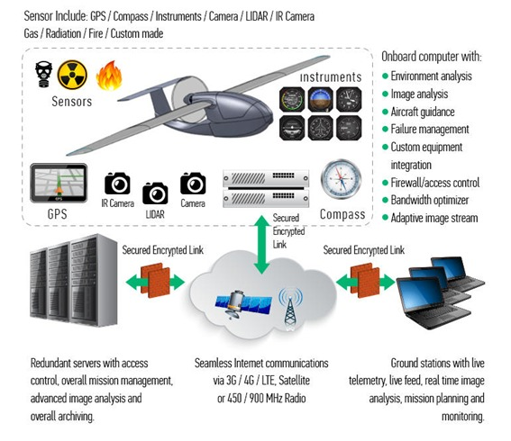

Drone
Há aproximadamente 5 anos, 3 engenheiros de software criaram a Wavre, eles buscavam mais do que já estava sendo oferecido pelo resto do mercado, tendo como objetivo transformar o gadjet voador (Drone) totalmente autônomo.
Antes disso drones autônomos, sem nenhuma intervenção humana só haviam sido apresentados em demonstrações técnicas.
O novo drone conta com a ajuda da inteligência artificial para a realização do projeto, utilizando sensores, cameras, gps, para tomar decições utilizando os dados coletados pelo mesmo. Veja o infográfico abaixo:
